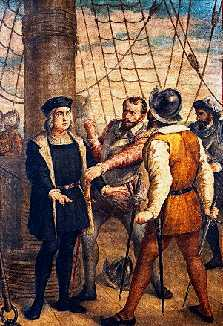

31 СЕНТЯБРЯ
ДЕНЬ, КОГДА МОЖНО ПАДАТЬ ДУХОМ
Я все время склоняю читателей быть сильными, позитивными, по-мюнхгаузеновски тянуть себя за волосы из болота и считать любой стакан, даже треснутый, наполовину полным. Но, как и обещал, иногда, редко, можно будет и расслабиться.
Сегодня у нас очередной выходной. Можно дать слабину, пожалеть себя, согнуться под пращами и стрелами яростной судьбы, пасть духом.
Расскажу вам в этой связи один малоизвестный исторический факт.
Был такой мореплаватель — Христофор Колумб, который…. Неважно.
В 1492 году его отправили искать дорогу в Индию. Никто никогда еще не заплывал в Море-Океан так далеко, тогдашние пузатые корабли норовили держаться поближе к берегу.
На двадцать третий день плавания к Колумбу явилась депутация, выборные от экипажа. Уважаемый всеми корабельный плотник Гонзало по прозвищу Эль-Клаво, то есть Гвоздь, сказал: «Командор, ты обещал, что мы будем плыть три недели, пока не выпьем половину воды, а потом повернем обратно. Три недели кончились позавчера. Ты сказал: еще один день. А вчера сказал: еще один, последний. Команда не хочет умирать от жажды. В той стороне нет никакой Индии. Надо поворачивать».
Колумб ответил: «Мы будем плыть, пока не закончится вода. А кто меня ослушается, тот мятежник и, клянусь Господом, я повешу его на рее».
Матросы переглянулись.
«Хорошо, ты наш командор, — сказал плотник. — До того дня, пока не закончится вода. Но в день, когда мы выпьем последнюю каплю, ты перестанешь быть нашим командором. Мы отворим тебе жилы, выльем из них всю твою кровь и напоследок напьемся ею. Согласен на такой уговор — тогда ладно, плывем дальше».
Колумб содрогнулся, представив, как у него из жил выливают всю кровь. И приказал поворачивать обратно.
Это было 31 сентября 1492 года. До острова Сан-Сальвадор оставалось всего сто пятьдесят морских миль.
Как известно, Америку чуть позднее открыл Америго Веспуччи, в честь которого и назван этот великий континент. А в честь Христофора Колумба назвали всего лишь Колумбию.
Сегодня, 31 сентября, всего пугайтесь и падайте духом, можно. Но только сегодня.